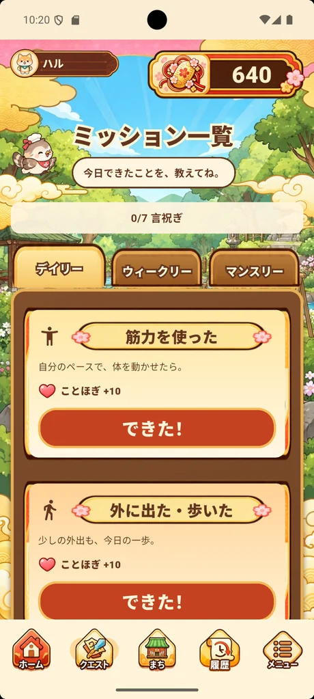
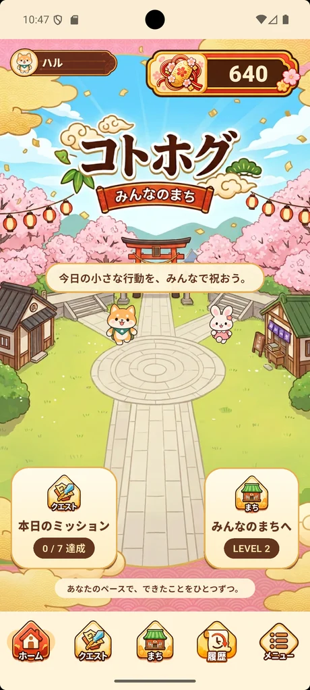
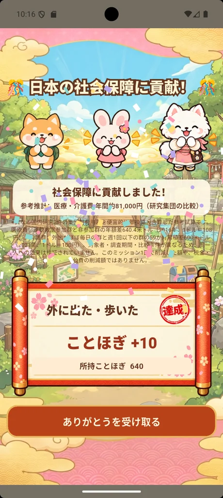
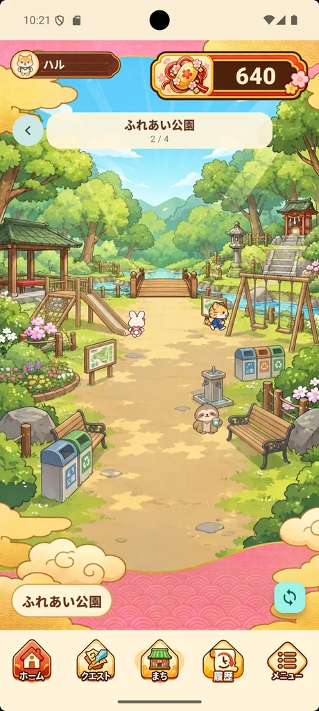

ちいさな一歩を見つけよう
筋力を使った。外に出た。誰かと話した。食事を整えた。趣味を楽しんだ。そんな日常がミッションに。
筋トレも、お散歩も、誰かとのおしゃべりも。
今日の「できた！」を、まちのみんなが祝福します。
筋トレをして、ほめられよう。
みんなで健康、介護予防。


運動量の細かい入力は必要ありません。できたことを、ぽんっと教えてね。

筋力を使った。外に出た。誰かと話した。食事を整えた。趣味を楽しんだ。そんな日常がミッションに。

ボタンを押すと、まちの仲間たちが拍手と紙吹雪で祝福。「ことほぎ」が増えていきます。

ことほぎを重ねると、少しずつまちが広がり、新しい住民との出会いも。お話しする楽しみもあります。
🌸 自分を大切にすることは、もっとほめられていい。🌸
A TOWN FULL OF THANKS
コトホグには、かわいい住民たちが暮らす小さなまちがあります。公園を歩いたり、商店街を訪ねたり。新しい住民を迎えたら、話しかけてみよう。
まちの仲間たちが、あなたの毎日の「できた！」を楽しみにしています。


住民はこれだけじゃないよ。まちの住民たちをもっと見る → ・ まちのまんがを読む →
WHY SELF-CARE MATTERS
筋力を保つこと、外に出て歩くこと、人とつながること。毎日のセルフケアは、将来の生活する力を支える大切な行動です。
自分のための小さな行動が、未来の誰かにとってもうれしいことかもしれない。だからコトホグは、できたことを思いきり祝福します。
EVERY LITTLE STEP COUNTS
できなかった日は減点しません。連続記録を競う必要もありません。体調や暮らしに合わせて、できることを自分のペースで。
介護や支援が必要になることは、失敗ではありません。どんな人にも、その人のペースがあります。
Q & A
筋力を使う、歩く、人と話す、食事を整える、趣味や学びを楽しむなど。デイリー・ウィークリー・マンスリーのミッションがあり、できたことを自己申告で記録します。
いいえ。休んだことで減点されたり、まちが衰退したりはしません。自分にできたことだけを祝うアプリです。
異なる2研究の集団間費用差を便宜的に足した仮の参考値です。自分のミッション達成によって、その金額が節約できたという意味ではありません。研究の説明を見る
介護予防につながる日常行動のきっかけを作るアプリですが、病気や要介護状態の予防を保証するものではありません。